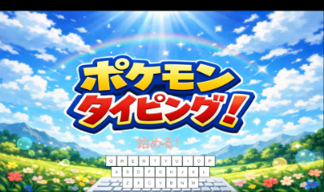
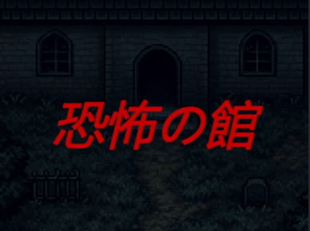
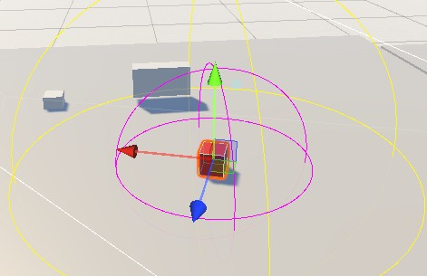

[ プロフィール ]
RPG / MMO / FPS をよく遊び、迷いやすさ・UI・協力プレイでの伝わり方を制作の参考にしています。
| 名前 | リディロス ヒロシ |
|---|---|
| 学校 | 横浜デジタルアーツ専門学校 ゲーム科 |
| 志望 | ゲームプログラマー |
| 得意分野 | マップエディタ / 当たり判定 / 敵AI / 入力判定 / UI改善 |
| 趣味 | ゲーム / アニメ / 漫画 / ボカロ / カラオケ |
| 好きなゲーム | ドラクエ / Apex Legends / プロセカ / ゼルダの伝説 / Hoyoverse作品 / パーティゲーム |
[ スキル ]
C++ / DxLib迷路メーカー、3D座標、当たり判定
Unity / C#Tilemap、AI、API通信、UI
CSV Data独自フォーマット、保存・読込、モデル管理
AI / SearchA*、BFS、状態遷移、Raycast
WebHTML / CSS / JavaScript
資格CGクリエイター検定 ベーシック / 情報検定 情報活用試験 3級
[ 作品紹介 ]

ポケAPI タイピングゲーム
PokéAPIでランダム出題し、GASランキングを入れたタイピングゲーム。ローマ字判定は状態遷移で実装。
詳細を見る →

恐怖の館
ランダム生成タイルマップとA*追跡AI。到達可能性と処理負荷を意識したホラー系作品。
詳細を見る →

エネミーAI 試作
視線判定、状態遷移、引き寄せ攻撃を分割して実装。安全に拡張できるAI構造を目指しました。
詳細を見る →
恐怖の館 C++版
DxLibでレイキャスト描画と敵追跡AIを制作。描画、探索、演出を分けて実装しました。
詳細を見る →
[ 制作で意識していること ]
FOCUS
制作効率を上げる
コードを直接変更しなくてもマップを調整できるように、配置・保存・読込・当たり判定調整をエディタ上で行える形にしました。
USER VIEW
分かりやすい体験を考える
ミニマップやUI、入力補助を通して、プレイヤーが状況を理解しやすい体験を考えています。好きなゲームを遊ぶ時も、分かりやすい導線や操作感をよく観察しています。
TEAM WORK
チームで実装を進める
短期間の制作では、優先順位を決めながらチームと進捗を共有し、必要な機能を実装しました。問題が出た時は相談しながら解決することを意識しています。